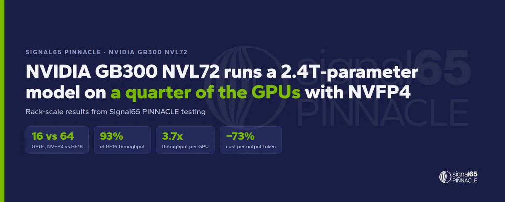
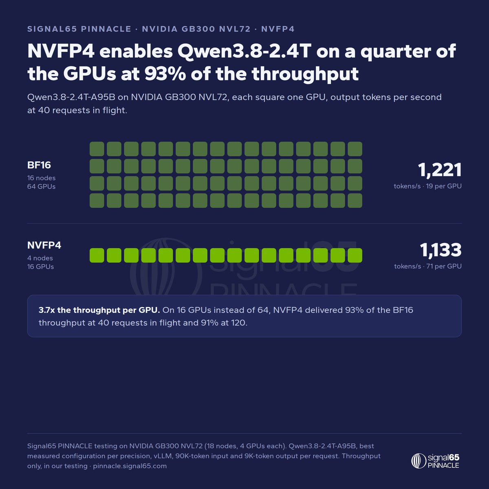
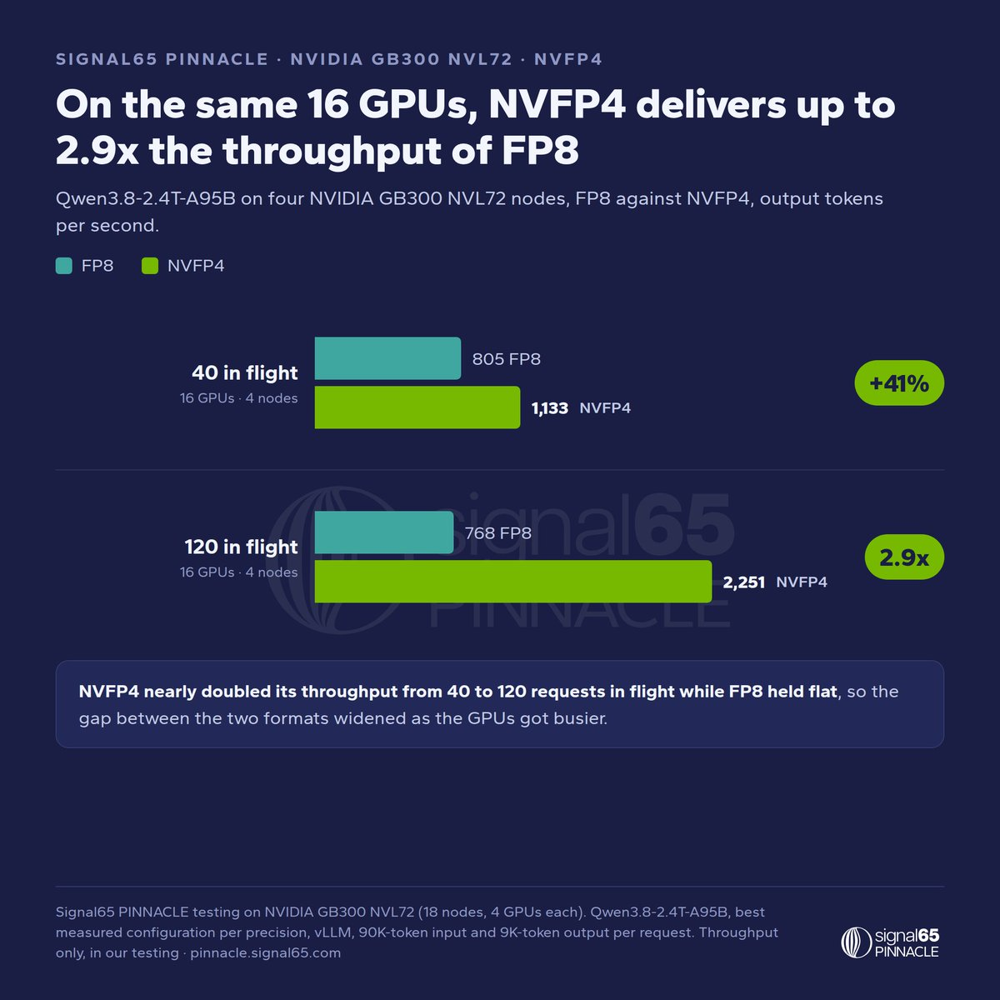
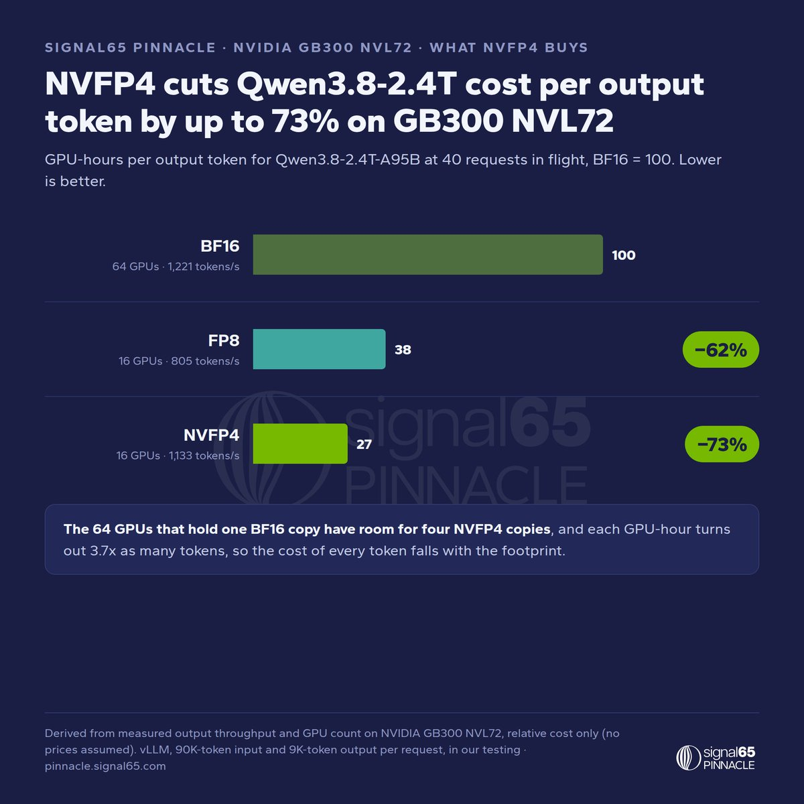
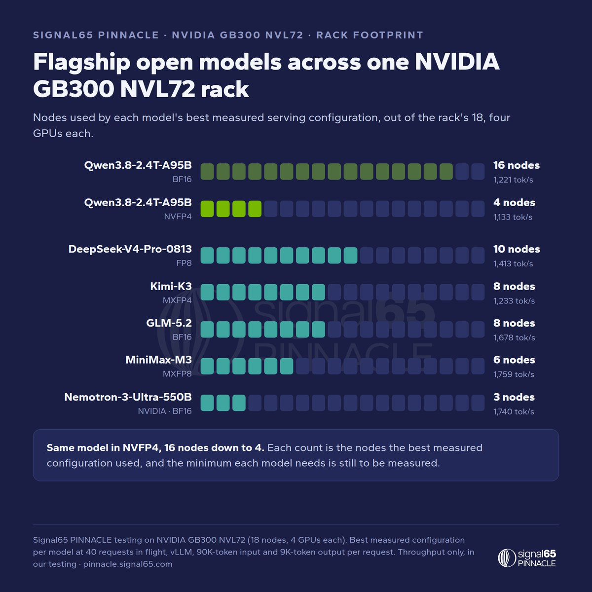

Signal65的PINNACLE基准出了第二批机架级结果，跑在NVIDIA GB300 NVL72上，主角是NVFP4：2.4万亿参数MoE模型Qwen3.8-2.4T-A95B，只用四分之一的GPU，跑出BF16版本93% 的吞吐。
下面拆解测试方法、三组对比数字、更小footprint的价值，以及各旗舰模型在机架上的占位，保留全部实测数据。
当前最大的开源模型，单份部署就要占机架很大一部分。Signal65 PINNACLE在NVIDIA GB300 NVL72上的机架级测试里，2.4万亿参数MoE模型Qwen3.8-2.4T-A95B的NVFP4版本只用16张GPU，就达到1,133 output tokens/sec：是BF16版本在64张GPU上1,221的93%。
折算下来：单GPU吞吐3.7倍（71对19 tokens/sec/GPU），每输出token的成本最高降低73%。

这是PINNACLE（pinnacle.signal65.com）下一阶段的第二批机架级结果，基准从单服务器扩展到机架级系统。第一批结果显示，仅调整serving设置，就在同一GB300 NVL72硬件上带来最高64% 的吞吐提升。NVIDIA是该项目的合作伙伴，NVFP4是其希望在机架级验证的平台能力。
测试方法：该模型已登上PINNACLE intelligence榜单。用vLLM以BF16、FP8、NVFP4三种权重格式部署，请求形状固定为90,000 token输入加9,000 token输出，并发40或120个agent/请求，每种格式取其最佳实测配置。
权重体积决定格局：BF16权重约4.8TB，接近16张GB300 GPU的全部显存，最佳BF16配置横跨机架18个节点中的16个。NVFP4把同样权重装进略多于四分之一的空间。
40并发下，NVFP4在4节点跑出1,133 output tokens/sec，对BF16在16节点的1,221。120并发下为2,251对2,474，即91%。按GPU折算，NVFP4为71 tokens/sec/GPU，BF16为19：每张GPU产出3.7倍。

限定同一4节点，NVFP4比FP8在40并发下高41%（1,133对805），120并发下扩大到2.9倍（2,251对768）。NVFP4吞吐随负载从40升到120近乎翻倍，FP8基本持平：两者差距随GPU变忙而拉大。

按“每输出token的GPU-hours”（占用GPU数除以吞吐）衡量，NVFP4相比BF16降低serving成本73%，相比FP8降低29%。容纳一份BF16模型的64张GPU，可容纳四份NVFP4模型。
对agentic部署的意义：同等硬件可并发更多agent，或把四分之三的GPU释放给其他工作。

需要机架级系统的不止Qwen一个。各模型最佳实测配置的节点数：DeepSeek-V4-Pro 10节点、Kimi-K3（MXFP4）8节点、GLM-5.2 8节点、MiniMax-M3（MXFP8）6节点、NVIDIA Nemotron-3-Ultra-550B 3节点（1,740 output tokens/sec）。
为每个模型找到能守住PINNACLE service floor的最小footprint，是后续工作之一。

配对的质量测试确认质量无损后，量化版本会加入结果视图。接下来，Qwen3.8-2.4T-A95B的NVFP4版本将跑PINNACLE的agentic和retrieval套件，随后做agent-capacity测试，把footprint节省表述为“每机架可服务的agent数”。
计划还包括更多NVFP4构建、各旗舰模型的最小footprint，以及NVIDIA工程师推荐的配置。已发布的模型智能、容量与成本结果均可在PINNACLE结果视图（pinnacle.signal65.com）查看。
参考：https://x.com/Signal_65/status/2107651870911078661